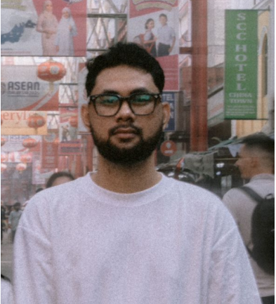

With seven years plus experience in Software Testing, I specialize in Manual and API testing, ensuring software quality with a meticulous and detail-oriented approach.
I specialize in Manual and API testing, ensuring software quality with a meticulous and detail-oriented approach. I thrive on testing complex systems, enjoy challenges, and have a strong passion for learning new technologies.
Now, I am eager to expand into automation testing, leveraging my solid manual testing foundation while embracing innovative tools and techniques. I seek opportunities to grow, excel, and continuously develop as a testing professional.
Years Experience
Project Tested
const tester = {
name: "Muhamad Azri Hisam",
specialization: "Manual & API Testing",
tools: ["Postman", "JIRA", "Postman", "Oracle SQL"],
status: "Ready for Automation"
};
Exact Online [WEB]
Vmware Systems [Web]
Baiduri Hire Purchase System (Core Banking) [Web]
Interested in working together? Let's connect.